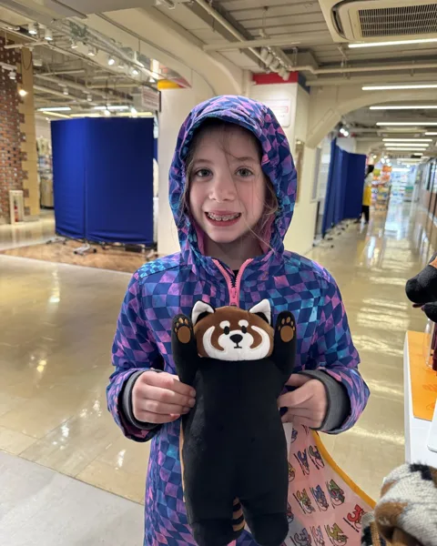
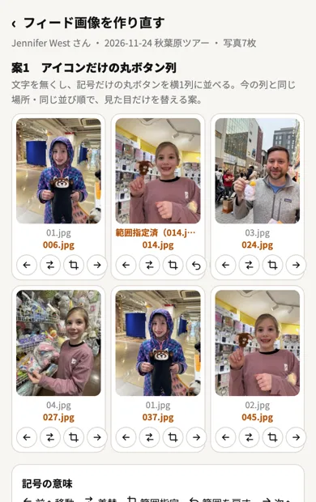
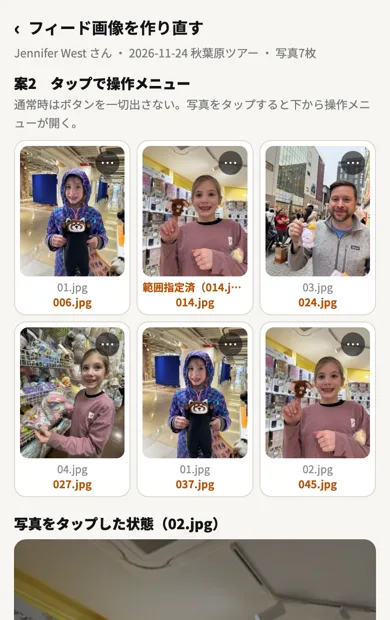
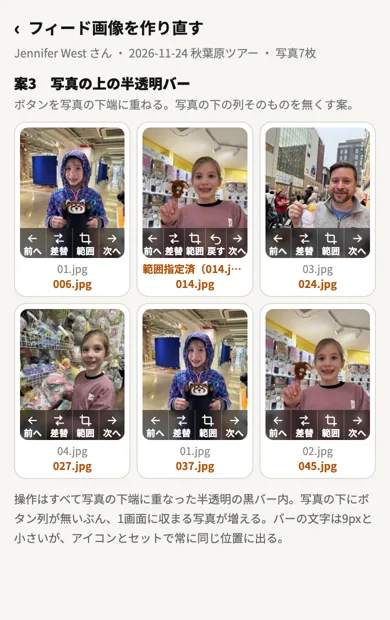
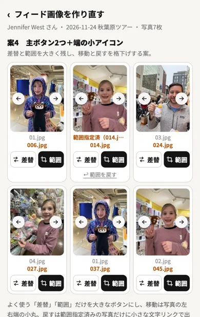
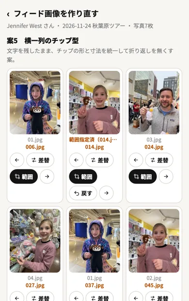

いまの状態（本番CSSの実寸再現）

01.jpg
006.jpg

範囲指定済（014.jpg）
014.jpg

03.jpg
024.jpg
- スマホでは写真が3列グリッド（1セル約116px）になり、ボタン列の幅は約106px。5つのボタンが flex:1 で分け合うと1つ約19pxしかない。
- 「差替」「範囲」「戻す」の2文字が1文字ずつ縦に折り返して並び、細長い短冊の列に見える。
- 「戻す」は範囲指定済みの写真にだけ出るため、列の数が写真ごとに変わり、なおさら揃って見えない。
- 5案とも、このボタン列単体の見た目の案です。別件の「カテゴリーごとに寄せる」レイアウト案と組み合わせる前提で、列の置き場所そのものは（案2・3を除き）変えていません。

案1アイコンだけの丸ボタン列
文字を無くし、直径26pxの丸ボタンに記号だけ。場所も並び順も今と同じで、列は1段に収まる。意味は凡例で覚える。
開く →

案2タップで操作メニュー
通常時はボタンを一切出さず写真だけ。タップすると下から大きな文字のメニューが開く。開いた状態もモック内で見せる。
開く →

案3写真の上の半透明バー
ボタンを写真の下端に重ねた半透明の黒バーへ移す。写真の下の列が無くなり、画面に収まる写真が増える。
開く →

案4主ボタン2つ＋端の小アイコン
差替・範囲だけを大きな2ボタンに。移動は写真の左右端の小丸、戻すは小さな文字リンクに格下げする。
開く →

案5横一列のチップ型
文字は残し、全ボタンを高さ30pxの丸チップに統一。文字は必ず横書き1行で、入りきらない分はチップごと次の段へ回る。
開く →
5操作の表現方法まとめ
| 操作 | 案1 丸アイコン | 案2 メニュー | 案3 半透明バー | 案4 主ボタン2つ | 案5 チップ型 |
|---|---|---|---|---|---|
| ← → 移動 | 丸ボタン（矢印記号） | メニュー内の行「前の位置へ／次の位置へ」 | バー両端の区画（矢印＋「前へ／次へ」） | 写真の左右端に重ねた小丸 | 矢印だけの丸チップ（両端） |
| 差替 | 丸ボタン（⇄記号） | メニュー内の行「写真を差し替える」 | バーの区画（記号＋「差替」） | 大きな主ボタン（白） | チップ「⇄ 差替」 |
| 範囲 | 丸ボタン（切り取り記号） | メニュー内の行「範囲を指定する」 | バーの区画（記号＋「範囲」） | 大きな主ボタン（黒） | 黒チップ「範囲」 |
| 戻す | 丸ボタン（↩記号）。範囲指定済みの写真だけに出る | メニュー内の行「範囲指定を戻す」 | バーの区画（記号＋「戻す」）。範囲指定済みだけに出る | 写真下の小さな文字リンク。範囲指定済みだけに出る | チップ「↩ 戻す」。範囲指定済みだけに出る |
| 通常時の見た目 | 記号の列が常時見える | ボタン無し。写真右上に「…」だけ | 写真にバーが常時重なる | 主ボタン2つ＋端の小丸が常時見える | チップの列が常時見える（2〜3段） |
迷ったときの見方：今の並びのまま最小の変更で済ませたいなら案1か案5、写真の見た目を優先するなら案2か案3、「差替と範囲さえ押しやすければいい」なら案4。